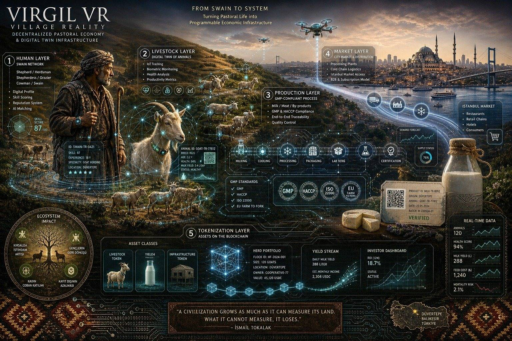
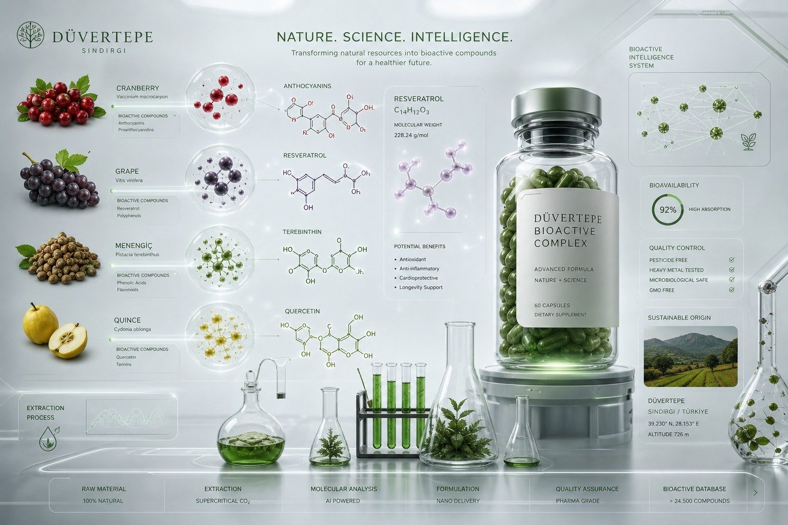
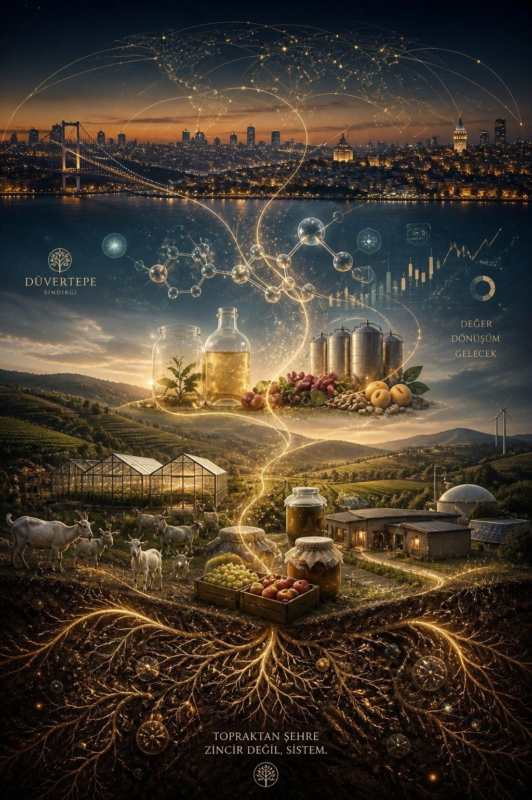

İnsan katmanı
Çoban ağı: her çobanın dijital kimliği, deneyimi ve itibarı.
- Çoban profili ve kimlik (SWAIN-TR-xxxx)
- Beceri puanı, itibar sistemi
- Sürü ile çoban eşleştirme
Çobanı, hayvanı, sütü, meyveyi ve topraktaki karbonu tek bir dijital ikizde birleştiriyoruz; Düvertepe'den İstanbul'a izlenebilir, ölçülebilir, finanse edilebilir bir kırsal ekonomi.
Ürünün üzerindeki QR kodu okutan tüketici; hangi hayvandan, hangi çobandan, hangi parti ve laboratuvar sonucundan geldiğini görür.
Her katman ayrı bir yazılım modülü olarak kodlanır ve aynı veritabanını paylaşır. Kodlama sırası ve iş bölümü Kodlama Planı sayfasında.
Çoban ağı: her çobanın dijital kimliği, deneyimi ve itibarı.
Her keçi ve koyunun dijital ikizi.
GMP / HACCP uyumlu, uçtan uca izlenebilir süreç.
Soğuk zincirle şehre akış ve talep tahmini.
Global Carbon Locked: topraktaki karbonu ölç, doğrula, krediye çevir.
Sürü, verim ve altyapıyı yatırıma açılabilir varlıklara dönüştürmek.

Mera, ahır ve mandıradaki her olay (sağım, aşı, sevkiyat) sisteme bir kayıt olarak düşer. Panel bu kayıtlardan hesaplanır; tahmin yok, ölçüm var.
Ürünün bütün geçmişi tek okutmada
Tasma, soğuk zincir ve toprak sensörleri

Kızılcık, üzüm, menengiç ve ayva; antosiyanin, resveratrol, fenolik asit ve kersetin kaynağı. Hammadde Düvertepe'den, analiz ve formülasyon laboratuvarda.
| Hammadde | Öne çıkan bileşik |
|---|---|
| Kızılcık | Antosiyanin, proantosiyanidin |
| Üzüm | Resveratrol, polifenoller |
| Menengiç | Fenolik asitler, flavonoidler |
| Ayva | Kersetin, tanen |
Tarım arazisi karbon kaynağı olmaktan çıkıp karbon yutağına dönüşebilir. 2028'den itibaren TR ETS kapsamındaki sanayi tesisleri yükümlülüklerinin bir kısmını tarım projelerinden üretilen Turkuaz Kredilerle karşılayabilecek.
Budama artığı, pirina, fındık kabuğu 350–700 °C'de piroliz. Karbonu 100–1.000 yıl kilitler. 1 t biyokömür ≈ 2,5–3 t CO₂e.
Sıfır toprak işleme, örtü bitkisi (fiğ, korunga), planlı dönüşümlü otlatma.
İnce öğütülmüş bazalt toprağa eklenir; CO₂ karbonat mineraline dönüşür.
Meyve ve ceviz gibi çok yıllık ağaçlarla biyokütle ve kökte karbon depolama.
Fiyatlar "GLOBAL CARBON LOCKED" notundaki 2028 TR ETS geçiş senaryosu simülasyonudur (tahsisat 25 €/t; onarıcı 12 €/t, biyokömür 22 €/t). Gerçek piyasa fiyatı değildir.
| # | Adım | Ne yapılır | Yazılımın rolü |
|---|---|---|---|
| 1 | Standart seçimi | Verra VCS (VM0042), Gold Standard ya da Turkuaz Kredi (7552 sayılı İklim Kanunu) | Proje kaydı, belge arşivi |
| 2 | Baz senaryo | Toprak numunesi (0–30, 30–60 cm), son 3–5 yılın gübre/mazot/sulama kaydı | Parsel ve girdi kayıt formları |
| 3 | PDD ve validasyon | Proje tasarım dokümanı, bağımsız denetçi (VVB) onayı | Rapor dışa aktarma (PDF) |
| 4 | Uygulama ve dMRV | Uydu NDVI, çiftlik yazılımı, periyodik numune | Uydu verisi + sensör paneli |
| 5 | Doğrulama ve ihraç | 1–5 yıllık dönem sonunda 1 t CO₂e = 1 kredi | Kredi defteri, satış takibi |

Yaklaşık 5 dönümlük proje alanı; konut, taraçalı bahçe ve bağ parselleri. Depolama ve üretim üssünün hangi parselde olacağı netleşecek.
| Ada / Parsel | Nitelik | Alan |
|---|---|---|
| 102 / 12 | Konut alanı (prefabrik yapı, eski köy okulu karşısı) | ~1 da |
| 248 / 2 | Taraçalı arazi / bahçe | 3 da |
| 105 / 3 | Parsel (Master Dosya v3.2) | 405,88 m² |
| Bağ alanı | Bağ parseli | 1 da |
"Bir medeniyet toprağını ölçebildiği kadar büyür. Ölçemediğini kaybeder."Virgil VR · From Swain to System